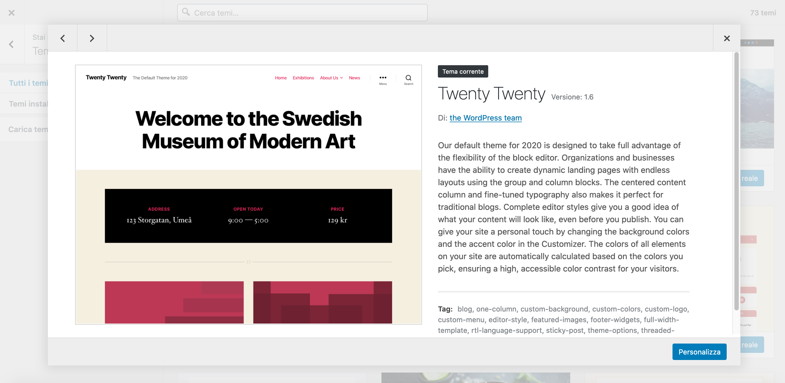
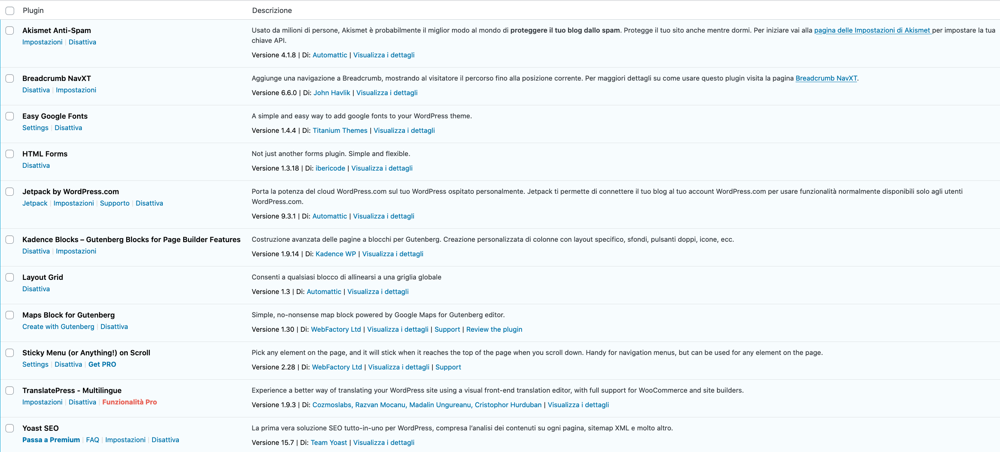
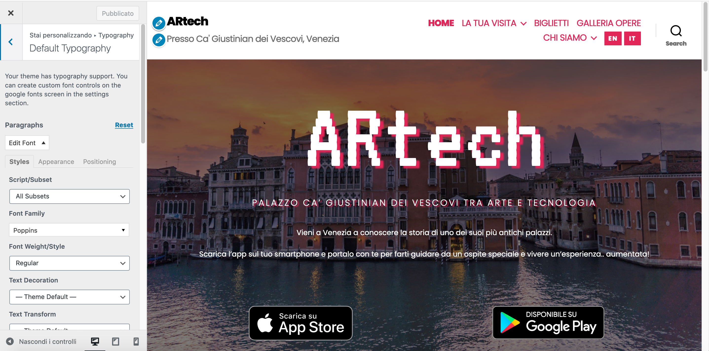
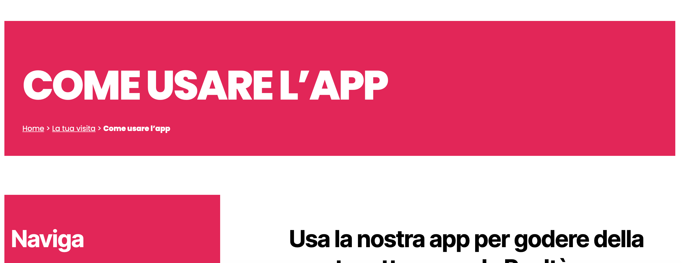
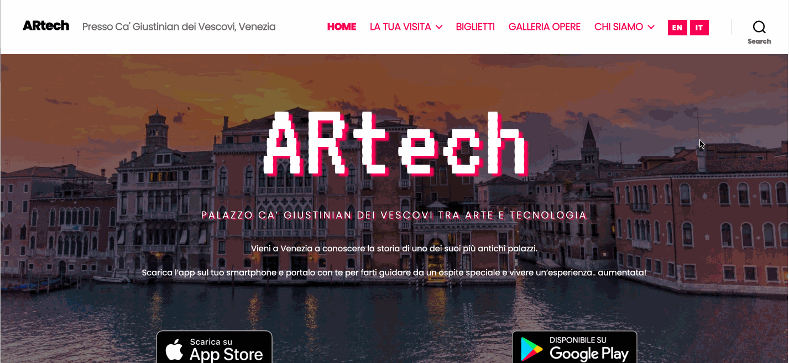
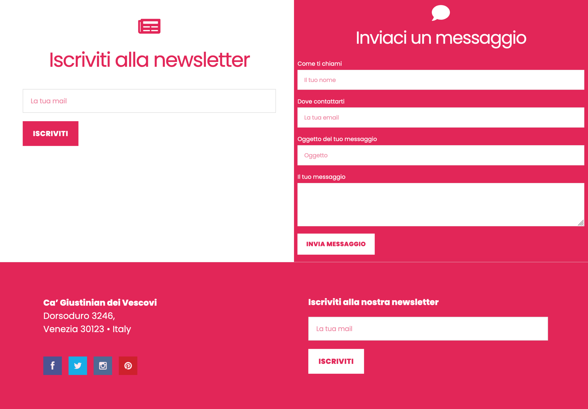

ARtech
Palazzo Ca’ Giustinian dei Vescovi tra arte e tecnologia
Progetto di
Giorgia Rubin (887760)
Alice Corona (887257)
1. Concept
Una mostra dedicata alla storia plurisecolare di Ca’ Giustinian dei Vescovi di Venezia: dimora dei suoi omonimi proprietari e accogliente riparo per i suoi ospiti più celebri. Rivolta ad un pubblico il più vasto possibile, senza limiti d’età né di disabilità fisiche, la mostra si approccia ai propri fruitori in modo interattivo attraverso l’utilizzo di semplici strumenti digitali personali quali smartphone e tablet.
Negli spazi espositivi al piano terra verranno raccontati i primi secoli di storia del palazzo veneziano (dal XIV al XVIII sec), in origine dimora della famiglia Giustinian, attraverso dipinti e ritratti della famiglia. A queste opere pittoriche, oltre ai racconti del nostro personaggio guida, saranno aggiunte informazioni aumentative di carattere principalmente tecnico pittorico. Al primo piano, saranno raccontati invece gli ultimi secoli del palazzo (dal XIX ad oggi), con la vendita dell’edificio al collezionista d’opere d’arte Natale Schiavoni fino alla sua concessione attuale all’Università Ca’ Foscari alla quale sarà dedicato l’ampio salone del primo piano. Dedicando ciascuna delle quattro stanze minori ai quattro principali ospiti del palazzo, tra cui il musicista Richard Wagner, sarà possibile per l’utente entrare in contatto con opere di entità differenti da quella pittorica, come ad esempio gli spartiti del compositore tedesco la cui musica sarà udibile attraverso la riproduzione aumentativa del corrispondente audio sonoro, oppure la narrazione recitata di alcuni estratti dai testi del romanziere statunitense William Dean Howells, altro celebre ospite del palazzo.
Il pubblico
- Famiglie con bambini ⇢ possibili diversi livelli di complessità nell'approfondimento e nell'interazione;
- Internazionale ⇢ sito multilingue;
- Inclusività ⇢ diversi modi di fruire il contenuto (audio, testo) + spiegazioni chiare sul funzionamento dell'app e delle modalità di interazione, per rispondere alle esigenze di diversi livelli di tech-literacy
2. USER EXPERIENCE

3. USER INTERFACE
Website Implementation
External theme (Twenty-Twenty)
Plugins
Plugins: Google Fonts
Plugins: Advanced layouts and image gallery

Plugins: Breadcrumbs
Plugins: Sticky header with main menu
Plugins: HTML Forms
Plugins: Multilingual Site